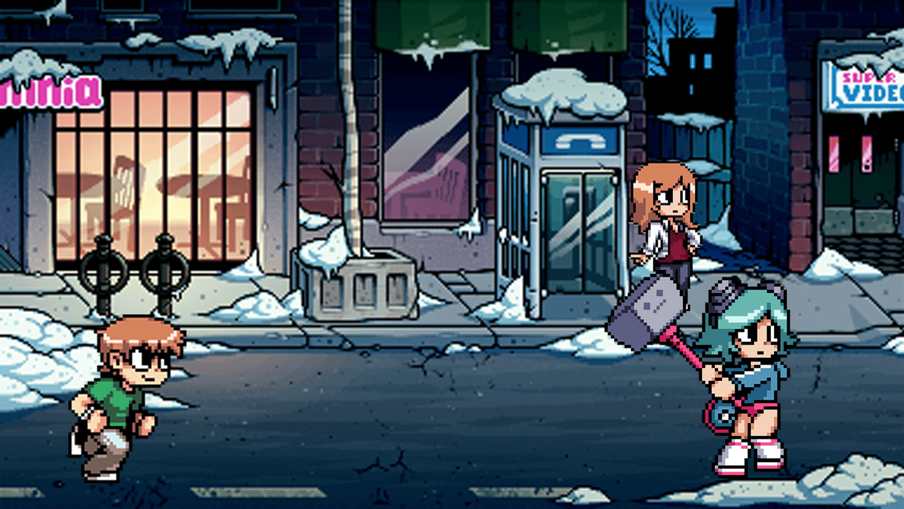
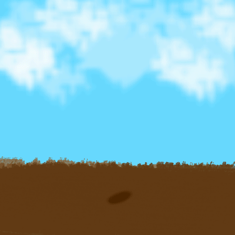
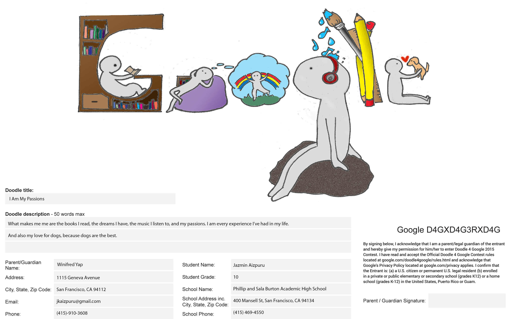
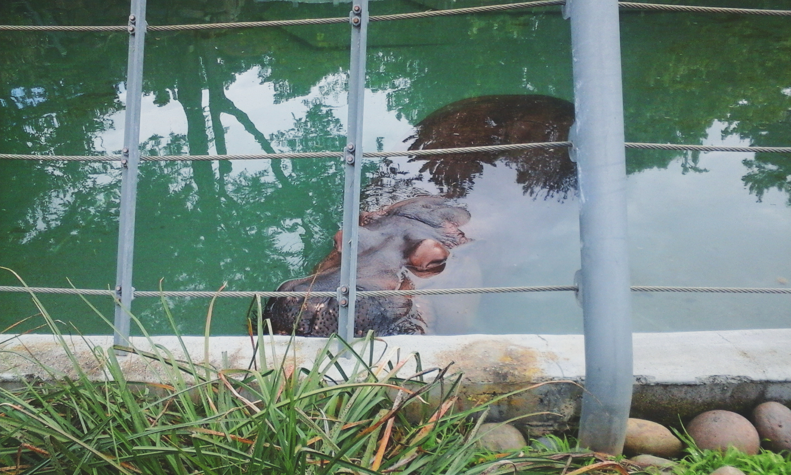
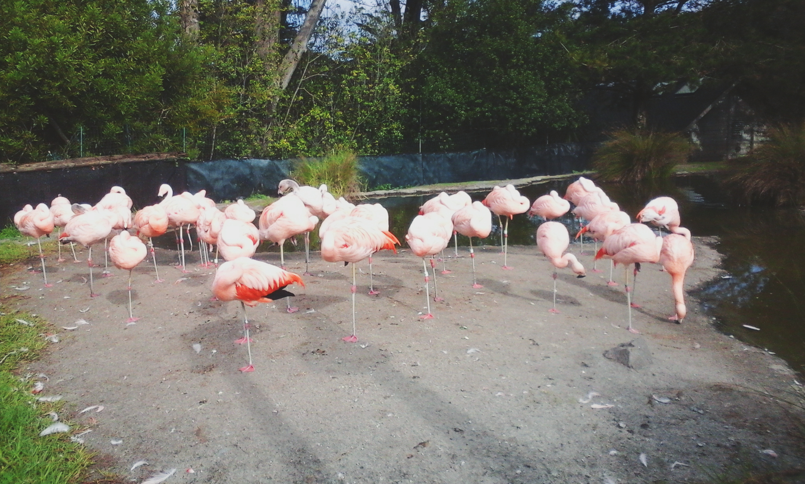

First Ever Flash Creation
A flash animation is like a GIF with attitude. And so, here is my first ever flash animation! I thought that creating a flash animation would be really hard but turns out that it's kind of easy - and fun. Learning how to do this stuff is really fun as you can make your own mini show! I really want to make more complex animations in the future :)

Scott Pilgrim!
Here is a pretty cool GIF I made from a spritesheet by using PhotoShop to slice up the spritesheet and combine the images into a moving animation. Creating this was a lot of work but it was really fun, too bad there aren't that much spritesheets you can choose from :(

Original Animation
This is an original cute plant GIF animation I made in AME! I made this by using photoshop, drawing the elements on separate layers and using the frame timeline to make it move! This is a really fun project and I hope to make more GIFs for fun the in the future!
Meet the New Princess!
Meet Nicariel, the newest princess 'round town! Creating this GIF was really fun! I enjoyed creating a gif of my own by using photoshop and getting random pictures from the internet. I'd say that this is one of my favorite GIFs so far!

Doogle 4 Google
This is one of our really fun projects during the first semester in AME where we create our own logos and submit them to google. I didn't win but it's the memories that count.
Scott Pilgrim!
Here is a pretty cool GIF I made from a spritesheet by using PhotoShop to slice up the spritesheet and combine the images into a moving animation. Creating this was a lot of work but it was really fun, too bad there aren't that much spritesheets you can choose from :(

A majestic hippo @ the San Francisco Zoo
One of my most memorable experiences was visiting the SF Zoo and just admiring this sleeping hippo.

Alluring flamingos @ SF Zoo
A flamboyance of flamingos showing off their amazing pink hues.
{kind=link}
{kind=link}
{kind=link}
{kind=link}
{kind=link}
{kind=link}
{kind=link}